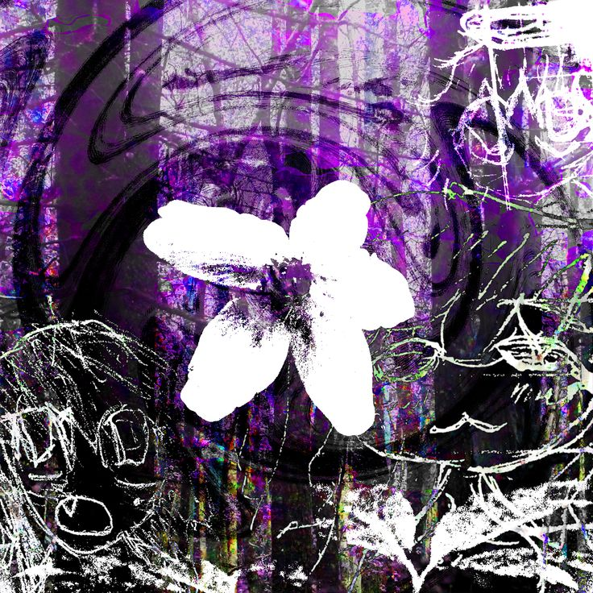

slvtizm
she/her ONLINE
just a dorky girl in love with programming, music & niche aesthetics.
about
solo C# software engineer for 5 years. currently one of two studio leads at Ariworks. i make alternative / drum & bass / breakcore music under the name 'slvtizm'.
i also used to do game dev in Unity for 4-5 years, and recently made the swap to software engineering after finding diminishing returns on game-dev as a whole.
socials
kv.427 / cortex--:--:--